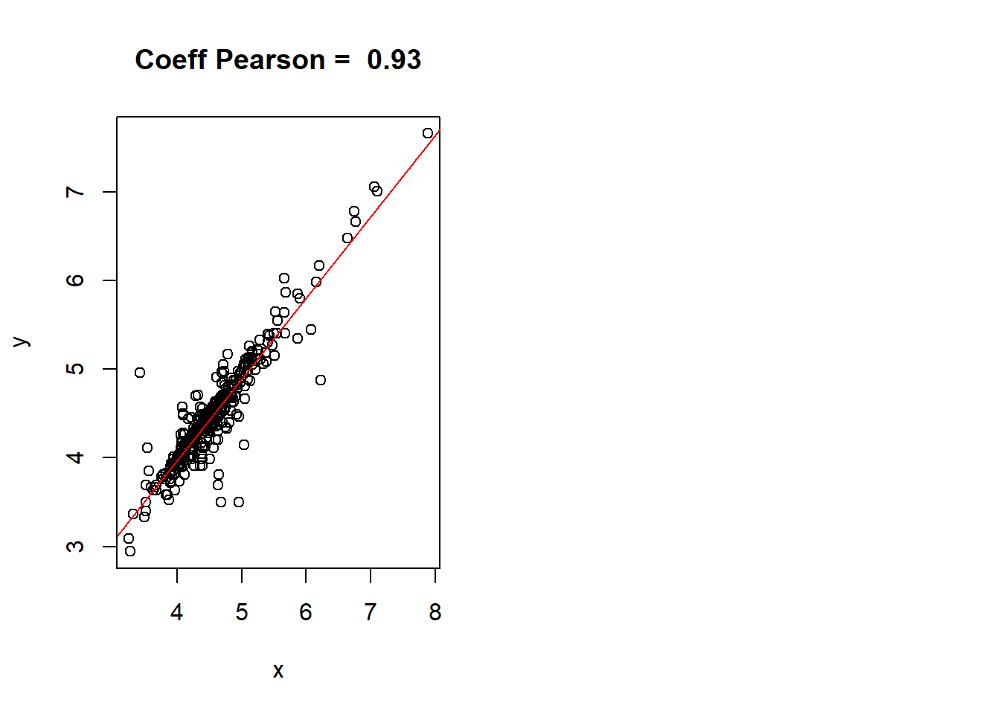

library(knitr)
library(rmdformats)Cette partie vise à préparer et nettoyer les données des logements Airbnb fournis par Airdna en vue de diverses analyses. La finalité de ce markdown est d’exporter les tableaux de données ainsi que les couches géographiques nettoyées de manière générique, de sorte à ce que ce code soit reproductible peu importe la commune d’entrée. Les deux paramètres à rentrer en début d’éxecution du code sont le code INSEE ainsi que le nom de la commune.
Afin de préparer les données pour une autre commune, le script prep.R condense toutes les opérations ci-dessous sous forme de fonctions, pour obtenir les mêmes résultats pour la commune sélectionnée, c’est-à-dire des fichiers consolidés ainsi qu’un geopackage regroupant les couches géographiques de la commune concernée. Ce script est appelé dans le markdown fonctions_prepadonnees.Rmd qu’il suffit d’exécuter en modifiant les paramètres du premier chunk, à savoir les deux fichiers fournis par Airdna pour la commune de référence, ainsi que le nom et le code INSEE de la commune.
Dans ce document, les tableaux en entrée correspondent à la commune d’Issy-les-Moulineaux.
# On rentre ici le code INSEE de la commune de référence
codeinsee <- 92040
nomcom <- "Issy"Les deux tableaux de données principaux seront les fichiers appelés mensuel_raw et individuel_raw et sont fournis par la plateforme Airdna. Le premier tableau de données contient les bilans mensuels des scraping. Cette base de données indique les mois durant lesquels chaque logement a été scrapé ainsi que les bilans en terme de fréquentation et de revenus engendrés durant le mois scrapé. La seconde base de données est plus détaillée mais est individuelle pour chaque logement Airbnb. En effet, on a 70 variables décrivant la totalité des logements présents dans la commune depuis le début de leur mise en ligne sur le marché : chaque ligne représente un logement. On a donc pour certains d’entre eux des logements qui ne sont plus actifs voire qui ont été retirés du marché.
Certaines variables sont communes aux deux bases de données. La différence entre les deux tableaux provient de la profondeur temporelle: le premier tableau résume les caractéristiques en terme de revenus et de fréquentation mois par mois depuis 2015 tandis que le second les agrège sur l’année passée (LTM = Last Twelve Months, novembre 2019-novembre 2020), mais contient aussi de données ayant une profondeur temporelle plus élevée, comme le nombre de commentaires reçu pour une location.
À cela s’ajoutent les tableaux descriptifs des variables, fournis eux aussi par Airdna et traduits par mes soins, qui définissent chacune des variables des tableaux de données.
# Packages nécessaires à la lecture des tableaux de données et aux traitements
library(readr)
library(readxl)
library(dplyr)
library(kableExtra)# Import des données
mensuel_raw <- read_csv("data/raw/France-issy-les-moulineaux_Monthly_Match_2020-12-10.csv")
individuel_raw <- read_csv("data/raw/France-issy-les-moulineaux_Property_Extended_Match_2020-12-10.csv")# Tableaux descriptifs des variables
Descr_individuel <- read_delim("meta/Descr_individuel.csv",
";", escape_double = FALSE, trim_ws = TRUE)
Descr_mensuel <- read_delim("meta/Descr_mensuel.csv",
";", escape_double = FALSE, trim_ws = TRUE)Afin d’avoir des éléments de contexte de la commune, nous rentrons aussi des données issues de la base de tourisme hôtelier (2019) ainsi que des données INSEE sur le nombre de logements dans chaque commune d’Île-de-France (2017).
log_tot <- read_csv("data/insee/INSEE_logements_idf.csv")
hotels <- read_xls("data/insee/base-cc-tourisme-2019-geo2019.xls", skip = 3)Une première étape de description des variables permettrait d’en apprendre un peu plus sur ces dernières, notamment lesquelles conserver pour de futures analyses. Ce premier tableau définit chaque variable et dénombre les modalités non attribuées (NA), ainsi que le nombre de modalités unique et le nombre de 0 pour les variables quantitatives. Il est nécessaire pour étudier la potentielle employabilité des variables à notre disposition.
# On prépare la fonction qui permet de calculer le nombre de NA par variable
f <- function(x){
c("Nombre de valeurs uniques" = length(unique(x)),
"Nombre de 0" = sum(x == 0),
"Nombre de valeurs NA" = sum(is.na(x)),
"Pourcentage de valeurs NA" = sum(is.na(x))/length(x)*100)
}
# On l'applique ensuite aux deux dataframe
mensuel <- mensuel_raw
individuel <- individuel_raw
df <- t(sapply(mensuel,f))
df <- as.data.frame(df)
df$tmp <- rownames(df)
df <- merge(df, Descr_mensuel[,c("Variable", "Description")], by.x = "tmp",
by.y = "Variable", all.x = TRUE)
df <- df %>% rename("Variable" = "tmp")
knitr::kable(df, digits = 1) %>%
kable_paper()| Variable | Nombre de valeurs uniques | Nombre de 0 | Nombre de valeurs NA | Pourcentage de valeurs NA | Description |
|---|---|---|---|---|---|
| Active | 2 | 30411 | 0 | 0.0 | TRUE si le logement a été proposé ou réservé au moins un jour durant la période de récolte |
| ADR (Native) | 6400 | NA | 35340 | 73.9 | Revenus engendré par l’hôte pour une réservation, dans la devise choisie par l’hôte : Revenus totaux / Nombre de nuitées réservées |
| ADR (USD) | 6371 | NA | 34893 | 73.0 | Revenus engendré par l’hôte pour une réservation, en dollars : Revenus totaux / Nombre de nuitées réservées |
| Airbnb Host ID | 1534 | NA | 2645 | 5.5 | Identifiant unique de chaque hôte Airbnb |
| Airbnb Property ID | 1788 | NA | 2632 | 5.5 | Identifiant unique de chaque propriété Airbnb |
| Available Days | 32 | 26149 | 0 | 0.0 | Nombre de jours classifiés comme disponibles, mais non réservés |
| Bedrooms | 10 | NA | 27 | 0.1 | Nombre de chambres |
| Blocked Days | 32 | 13991 | 0 | 0.0 | Nombre de jours classifiés comme bloqués à la réservation. |
| City | 1 | 0 | 0 | 0.0 | Ville dans laquelle se situe le logement |
| Country | 1 | 0 | 0 | 0.0 | Pays dans lequel se situe le logement |
| Currency Native | 6 | NA | 3064 | 6.4 | Devise choisie par l’hôte |
| HomeAway Property ID | 113 | NA | 44579 | 93.2 | Identifiant unique de chaque propriété Homeaway |
| HomeAway Property Manager | 6 | NA | 47561 | 99.5 | Identifiant unique de chaque hôte Homeaway |
| Latitude | 1572 | 0 | 0 | 0.0 | Latitude du logement |
| Listing Type | 4 | 0 | 0 | 0.0 | Type de logement (selon modalités Airbnb) |
| Longitude | 1728 | 0 | 0 | 0.0 | Longitude du logement |
| Metropolitan Statistical Area | 1 | NA | 47817 | 100.0 | Aire statistique métropolitaine dans laquelle se trouve le logement (seulement aux USA) |
| Neighborhood | 1 | NA | 47817 | 100.0 | Quartier où se situe le logement |
| Number of Reservations | 26 | 35310 | 0 | 0.0 | Nombre de réservations durant le mois |
| Occupancy Rate | 310 | NA | 3618 | 7.6 | Taux de fréquentation : Nombre de jours réservés / (nombre de nuitées réservés + nombre de nuitées disponibles) pendant le mois |
| Property ID | 1877 | 0 | 0 | 0.0 | Identifiant unique de chaque propriété |
| Property Type | 43 | NA | 2 | 0.0 | Type de logement (choisi par l’hôte) |
| Reporting Month | 64 | 0 | 0 | 0.0 | Mois pendant lequel les données ont été récoltées |
| Reservation Days | 32 | 34909 | 0 | 0.0 | Nombre de nuitées réservées durant le mois |
| Revenue (Native) | 8797 | NA | 2722 | 5.7 | Revenus totaux engendrés pendant la période de récolte dans la devise choisie par l’hôte |
| Revenue (USD) | 6544 | NA | 6983 | 14.6 | Revenus totaux engendrés pendant la période de récolte en dollars |
| Scraped During Month | 2 | 15595 | 0 | 0.0 | TRUE si le logement a été scrapé pendant le mois |
| State | 1 | 0 | 0 | 0.0 | Région dans laquelle se situe le logement |
| Zipcode | 1 | NA | 47817 | 100.0 | Code postal de la ville du logement |
df <- t(sapply(individuel,f))
df <- as.data.frame(df)
df$tmp <- rownames(df)
df <- merge(df, Descr_individuel[,c("Variable", "Description")], by.x = "tmp",
by.y = "Variable", all.x = TRUE)
df <- df %>% rename("Variable" = "tmp")
knitr::kable(df, digits = 1) %>%
kable_paper()| Variable | Nombre de valeurs uniques | Nombre de 0 | Nombre de valeurs NA | Pourcentage de valeurs NA | Description |
|---|---|---|---|---|---|
| Airbnb Accuracy Rating | 9 | NA | 741 | 39.5 | Note sur 10 attribuée par le visiteur à l’exactitude de l’annonce |
| Airbnb Checkin Rating | 9 | NA | 741 | 39.5 | Note sur 10 attribuée par le visiteur à l’accueil de l’hôte |
| Airbnb Cleanliness Rating | 10 | NA | 741 | 39.5 | Note sur 10 attribuée par le visiteur à la propreté du logement |
| Airbnb Communication Rating | 10 | NA | 741 | 39.5 | Note sur 10 attribuée par le visiteur à la communication de l’hôte |
| Airbnb Home Collection | 1 | NA | 1878 | 100.0 | TRUE : le logement fait partie d’un ensemble de logements sélectionnés par Airbnb pour un type spécifique de voyage |
| Airbnb Host ID | 1534 | NA | 93 | 5.0 | Identifiant unique de chaque hôte Airbnb |
| Airbnb Location Rating | 8 | NA | 741 | 39.5 | Note sur 10 attribuée par le visiteur à la localisation du logement |
| Airbnb Property ID | 1788 | NA | 91 | 4.8 | Identifiant unique de chaque propriété Airbnb |
| Airbnb Property Plus | 1 | NA | 1878 | 100.0 | TRUE : le logement est considéré par Airbnb comme étant « exceptionnel » et vérifié par un contrôle qualité |
| Airbnb Response Time (Text) | 5 | NA | 936 | 49.8 | Temps de réponse de l’hôte |
| Airbnb Superhost | 3 | NA | 110 | 5.9 | TRUE si l’hôte est Superhost |
| Airbnb Value Rating | 9 | NA | 742 | 39.5 | Note sur 10 attribuée par le visiteur au rapport qualité/prix |
| Amenities | 1729 | NA | 20 | 1.1 | Aménités présentes au sein du logement |
| Annual Revenue LTM (Native) | 445 | NA | 91 | 4.8 | Revenus totaux engendrés par l’hôte sur l’année passée, dans la devise choisie par l’hôte |
| Annual Revenue LTM (USD) | 487 | 1383 | 0 | 0.0 | Revenus totaux engendrés par l’hôte sur l’année passée, en dollars |
| Average Daily Rate (Native) | 402 | NA | 1401 | 74.6 | Revenus engendré par l’hôte pour une réservation, dans la devise choisie par l’hôte sur l’année passée : Revenus totaux / Nombre de nuitées réservées |
| Average Daily Rate (USD) | 467 | NA | 1383 | 73.6 | Revenus engendré par l’hôte pour une réservation, en dollars sur l’année passée : Revenus totaux / Nombre de nuitées réservées |
| Bathrooms | 13 | NA | 8 | 0.4 | Nombre de salles de bain |
| Bedrooms | 10 | NA | 2 | 0.1 | Nombre de chambres |
| Calendar Last Updated | 893 | NA | 235 | 12.5 | Dernier jour durant lequel l’hôte a mis à jour son calendrier |
| Cancellation Policy | 37 | NA | 11 | 0.6 | Mesures d’annulation |
| Check-in Time | 225 | NA | 457 | 24.3 | NA |
| Checkout Time | 35 | NA | 877 | 46.7 | Heure du checkout |
| City | 1 | 0 | 0 | 0.0 | Ville dans laquelle se situe le logement |
| Cleaning Fee (Native) | 71 | NA | 1214 | 64.6 | Frais de ménage par réservation dans la devise choisie par l’hôte |
| Cleaning Fee (USD) | 126 | NA | 950 | 50.6 | Frais de ménage par réservation en dollars |
| Count Available Days LTM | 162 | NA | 1383 | 73.6 | Nombre de jours classés comme disponibles, c’est à dire proposés à la location mais non réservé durant les 12 derniers mois |
| Count Blocked Days LTM | 100 | NA | 1383 | 73.6 | Nombre de jours classés comme bloqués durant les 12 derniers mois |
| Count Reservation Days LTM | 144 | NA | 1383 | 73.6 | Nombre de jours classés comme réservés durant les 12 derniers mois |
| Country | 1 | 0 | 0 | 0.0 | Pays dans lequel se situe le logement |
| Created Date | 992 | NA | 91 | 4.8 | Date durant laquelle a été mis en ligne le logement |
| Currency Native | 5 | NA | 112 | 6.0 | Devise choisie par l’hôte |
| Exact Location | 3 | NA | 4 | 0.2 | TRUE : l’annonce est à l’endroit précis où elle est localisée |
| Extra People Fee (Native) | 30 | NA | 1574 | 83.8 | Frais pour un voyageur supplémentaire dans la devise choisie par l’hôte |
| Extra People Fee (USD) | 44 | NA | 1487 | 79.2 | Frais pour un voyageur supplémentaire en dollars |
| HomeAway Location Type | 9 | NA | 1848 | 98.4 | Type de logement HomeAway |
| HomeAway Premier Partner | 2 | NA | 1787 | 95.2 | TRUE si l’hôte est Premier Partner chez HomeAway |
| HomeAway Property ID | 117 | NA | 1762 | 93.8 | Identifiant unique de chaque propriété Homeaway |
| HomeAway Property Manager ID | 1 | NA | 1878 | 100.0 | Identifiant unique de chaque hôte Homeaway |
| Instantbook Enabled | 2 | 1314 | 0 | 0.0 | TRUE : l’annonce peut être réservée sans devoir communiquer avec l’hôte |
| Integrated Property Manager | 3 | NA | 1787 | 95.2 | TRUE : l’hôte vit dans le logement qu’il loue |
| Last Scraped Date | 754 | 0 | 0 | 0.0 | Dernier jour où le logement a été scrapé. Chaque logement est scrapé tous les 3 jours |
| Latitude | 1573 | 0 | 0 | 0.0 | Latitude du logement |
| License | 98 | NA | 1777 | 94.6 | Numéro de licence de l’hôte |
| Listing Images | 1711 | NA | 154 | 8.2 | Photos de l’annonce |
| Listing Main Image URL | 1860 | 0 | 0 | 0.0 | Lien URL vers la photo principale de l’annonce |
| Listing Title | 1835 | 0 | 0 | 0.0 | Titre de l’annonce |
| Listing Type | 4 | 0 | 0 | 0.0 | Type de logement (selon modalités Airbnb) |
| Listing URL | 1878 | 0 | 0 | 0.0 | Lien URL vers l’annonce |
| Longitude | 1729 | 0 | 0 | 0.0 | Longitude du logement |
| Max Guests | 14 | NA | 6 | 0.3 | Capacité d’accueil en nombre de voyageurs |
| Metropolitan Statistical Area | 1 | NA | 1878 | 100.0 | Aire statistique métropolitaine dans laquelle se trouve le logement (seulement aux USA) |
| Minimum Stay | 30 | NA | 15 | 0.8 | Durée minimale du séjour |
| Neighborhood | 1 | NA | 1878 | 100.0 | Quartier où se situe le logement |
| Number of Bookings LTM | 61 | 1429 | 0 | 0.0 | Nombre de réservations lors des 12 derniers mois |
| Number of Photos | 53 | NA | 12 | 0.6 | Nombre de photos présentes sur l’annonce |
| Number of Reviews | 103 | NA | 1 | 0.1 | Nombre total de commentaires sur l’annonce |
| Occupancy Rate LTM | 338 | NA | 1383 | 73.6 | Taux de fréquentation : Nombre de jours réservés / (nombre de nuitées réservés + nombre de nuitées disponibles) Les calculs ne prennent pas en compte les jours bloqués et les mois sans réservation |
| Overall Rating | 43 | NA | 707 | 37.6 | Note du visiteur sur une échelle de 0 à 100 |
| Pets Allowed | 3 | NA | 91 | 4.8 | TRUE : les animaux sont autorisés au sein du logement |
| Property ID | 1878 | 0 | 0 | 0.0 | Identifiant unique de chaque propriété |
| Property Type | 43 | NA | 1 | 0.1 | Type de logement (choisi par l’hôte) |
| Published Monthly Rate (USD) | 1013 | NA | 505 | 26.9 | Prix mensuel choisi par l’hôte |
| Published Nightly Rate (USD) | 282 | NA | 111 | 5.9 | Prix choisi par l’hôte pour une nuitée |
| Published Weekly Rate (USD) | 656 | NA | 504 | 26.8 | Prix hebdomadaire choisi par l’hôte |
| Response Rate | 53 | NA | 298 | 15.9 | Pourcentage de réponse de l’hôte dans les 24h |
| Security Deposit (Native) | 54 | NA | 1327 | 70.7 | Caution choisie par l’hôte dans sa devise |
| Security Deposit (USD) | 338 | NA | 1239 | 66.0 | Caution choisie par l’hôte en dollars |
| State | 1 | 0 | 0 | 0.0 | Région dans laquelle se situe le logement |
| Zipcode | 1 | NA | 1878 | 100.0 | Code postal de la ville du logement |
Première remarque : on a trop de variables. On passe donc par une première étape de sélection des variables afin de ne conserver que celles utiles à nos analyses. Au nombre de chambres par exemple, on va préférer la capacité de voyageurs qui se trouve dans la colonne Max Guests du second tableau. De plus, les colonnes correspondant aux prix payés par les visiteurs étant exprimées seulement en dollars, on fait le choix de ne garder que les valeurs en dollars par souci d’harmonisation. Pour faire la conversion, un dollar s’échange contre 0.83€ à la date du 10/12/2020 (dernier mois scrapé). En ce qui concerne les caractéristiques de localisation des logements, on ne garde que la latitude et la longitude qui permettront par la suite de cartographier ces derniers. Etant donné que la totalité des logements se trouvent au sein d’une même commune, il n’est pas nécessaire de garder les variables telles que la ville, le pays, etc. Les notes attribuées aux logements ne feront pas l’objet d’analyses pointues, ainsi on les supprime de notre tableau. Les variables correspondant à la description de l’annonce sur le site airbnb.fr ainsi que celles liées aux logements HomeAway seront elles aussis supprimées.
mensuel <- mensuel %>%
select(`Property ID`, `Listing Type`, `Property Type`, `Reporting Month`, `Occupancy Rate`,
`Revenue (USD)`,`ADR (USD)`,`Number of Reservations`, `Reservation Days`,
`Available Days`, `Blocked Days`, Latitude, Longitude, Active, `Airbnb Property ID`,
`Airbnb Host ID`)
individuel <- individuel %>%
select(`Property ID`, `Listing Title`, `Listing Type`, `Property Type`, `Created Date`,
`Last Scraped Date`, `Average Daily Rate (USD)`,`Annual Revenue LTM (USD)`,
`Occupancy Rate LTM`, `Number of Bookings LTM`, `Max Guests`,
`Calendar Last Updated`, `Published Nightly Rate (USD)`, `Minimum Stay`,
`Count Reservation Days LTM`, `Count Available Days LTM`, `Count Blocked Days LTM`,
Amenities, Latitude, Longitude, License, `Airbnb Property ID`, `Airbnb Host ID`)Pour rendre les données plus lisibles, nous renommons les variables
mensuel <- mensuel %>%
rename("id_propriete" = "Property ID", "type" = "Listing Type",
"type_logement" = "Property Type", "mois" = "Reporting Month",
"revenus_mois" = "Revenue (USD)", "revenus_nuitee" = "ADR (USD)",
"nb_resa" = "Number of Reservations", "nb_nuitees" = "Reservation Days",
"nb_dispo" = "Available Days", "nb_bloques" = "Blocked Days",
"id_logement" = "Airbnb Property ID", "id_hote" = "Airbnb Host ID")
individuel <- individuel %>%
rename("id_propriete" = "Property ID", "type_logement" = "Property Type",
"id_hote" = "Airbnb Host ID", "id_logement" = "Airbnb Property ID",
"titre" = "Listing Title", "type" = "Listing Type", "debut" = "Created Date",
"fin" = "Last Scraped Date", "revenus_nuitee" = "Average Daily Rate (USD)",
"revenus_annee" = "Annual Revenue LTM (USD)", "nb_resa_annee" = "Number of Bookings LTM",
"capacite" = "Max Guests", "prix" = "Published Nightly Rate (USD)",
"duree_min" = "Minimum Stay", "nb_nuitees" = "Count Reservation Days LTM",
"nb_dispo" = "Count Available Days LTM", "nb_bloques" = "Count Blocked Days LTM")Nous ne gardons que les logements et les chambres d’hôtel de la commune en question
colnames(hotels) <- hotels[1, ]
hotels <- hotels %>% filter(CODGEO == codeinsee)
log_com <- log_tot %>% filter(insee == codeinsee)Une fois les variables sélectionnées, nous passons par une processus de filtrage. En effet, des chambres d’hôtel se trouvent sur le site Airbnb. Dans certaines communes, il s’agit même d’une des modalités de la variable correspondant au type de logement (variable type). On supprime aussi les variables correpondants aux hôtels dans la colonne type_logement car certains d’entre eux sont considérés comme logements entiers. Cette dernière catégorie se décline en plusieurs dizaines de modalités car elle est plus précise et choisie arbitrairement par l’hôte.
table(individuel$type)##
## Entire home/apt Hotel room Private room Shared room
## 1487 5 347 39table(individuel$type_logement)##
## apartment Apartment
## 4 1449
## Bed & Breakfast Bed & Breakfast
## 4 3
## Bed and breakfast Boat
## 7 20
## Building Cave
## 1 1
## Condominium Corporate Apartment
## 112 1
## Entire apartment Entire boat
## 48 3
## Entire condominium Entire house
## 2 3
## Entire loft Entire place
## 1 2
## Guest suite Guesthouse
## 3 8
## hotel Hotel
## 7 2
## house House
## 1 86
## House Boat Houseboat
## 2 9
## Island Loft
## 1 6
## Private room Private room in apartment
## 1 17
## Private room in condominium Private room in guesthouse
## 1 2
## Resort Room in aparthotel
## 1 9
## Room in boutique hotel Room in hotel
## 11 1
## Serviced apartment Shared room in apartment
## 28 2
## studio Studio
## 1 4
## Timeshare Tiny house
## 1 1
## Townhouse Villa
## 7 4# On supprime ensuite les annonces correspondant à des chambres d'hôtel
library(stringr)
mensuel <- mensuel %>% filter (type != "Hotel room")
mensuel <- mensuel %>% mutate(hotel = str_detect(type_logement, pattern = "hotel"),
hotel2 = str_detect(type_logement, pattern = "Hotel"))
mensuel <- mensuel %>% filter(hotel != TRUE & hotel2 != TRUE)
mensuel <- mensuel %>% select(-hotel, -hotel2, -type_logement)
individuel <- individuel %>% filter (type != "Hotel room")
individuel <- individuel %>% mutate(hotel = str_detect(type_logement, pattern = "hotel"),
hotel2 = str_detect(type_logement, pattern = "Hotel"))
individuel <- individuel %>% filter(hotel != TRUE & hotel2 != TRUE)
individuel <- individuel %>% select(-hotel, -hotel2, -type_logement)Après suppression des chambres d’hôtel, le nombre total d’observations passe de 47817 à 47210. Sur les 1878 annonces mises en ligne, cela n’en représente que 31.
En plus des chambres d’hôtel, on trouve aussi des logements HomeAway sur les tableaux de données fournis par Airdna. D’une part, le sujet d’étude est Airbnb, et d’autre part ils sont à l’origine de nombreuses valeurs non attribuées dans nos tableaux : en parcourant le tableau, on se rend compte que les NA dans les variables id_logement et id_hote correspondent à des logements HomeAway (ceux pour lesquels la variable id_propriete commence par les lettres “ha”). On supprime alors des deux tableaux les lignes correspondant à un identifiant autre que celui associé au site airbnb.com.
individuel <- individuel %>% filter(!is.na(id_logement))
mensuel <- mensuel %>% filter(!is.na(id_logement))Cette même variable id_logement désigne l’identifiant unique pour chaque logement. Une simple vérification permet d’affirmer qu’il n’y a pas de doublon.
# On cherche la fréquence d'occurence de chaque identifiant de logement
verif <- as.data.frame(table(individuel$id_propriete))
summary(verif$Freq)## Min. 1st Qu. Median Mean 3rd Qu. Max.
## 1 1 1 1 1 1# On peut maintenant supprimer cette variable car on a la colonne id_logement qui est similaire
individuel <- individuel %>%
select(-id_propriete)
mensuel <- mensuel %>%
select(-id_propriete)Les variables non attribuées sont représentées par un NA dans le tableau de données. La fonction is.na nous permet de les retrouver facilement, et il est possible via la fonction f écrite précédemment d’en compter le pourcentage par colonne. Il existe plusieurs cas de figure de valeurs NA, et différentes façon de les remplacer spécifiques à ces causes :
Il s’agit de données manquantes et indépendantes, auquel cas il est difficile de les estimer. Une solution serait de supprimer les lignes correspondant à ces valeurs manquantes, si elles représentent une part infime des observations. La première phase de sélection des colonnes a permis de se débarasser de beaucoup de valeurs non attribuées.
Il s’agit de données manquantes liées à une ou plusieurs autres variables. Dans ce cas de figure, il est possible de réestimer cette valeur en fonction d’une autre variable (par exemple estimer le prix en fonction du revenu).
Il est nécessaire de bien faire la distinction entre les mécanismes de production des données manquantes afin de faire le juste choix de traitement car cela pourrait influencer les résultats des analyses statistiques en y implémentant de possibles biais. En effet, remplacer des valeurs non attribuées par des 0 pourrait avoir un impact plus ou moins considérables selon le nombre d’observations. La détection des valeurs manquantes ainsi que le détermination de la cause de leur présence représente donc un enjeu car la méthode d’imputation (de remplacement) dépendra de cette analyse. Par exemple, dans notre cas de figure, remplacer les valeurs non attribuées correspondant aux revenus d’un logement par des 0 n’aurait pas de sens si le logement n’a jamais été loué. On préferera par conséquent laisser les valeurs non attribuées pour ne pas fausser les analyses statistiques.
Ainsi, le remplacement des valeurs non attribuées se fait en deux étapes : il faut d’abord chercher le mécanisme d’apparition de ces valeurs (si la valeur manquante dépend ou non d’une autre variable ou s’il existe d’autres causes de l’ordre du temporel par exemple), pour ensuite choisir la méthode d’imputation, sans oublier de sélectionner seulement les observations que l’on souhaite transformer. Après sélection des colonnes et filtrage des lignes, le tableau descriptif ressemble donc à ceci :
# On va compter les NA dans chaque colonne en appelant la fonction
df <- t(sapply(individuel,f))
knitr::kable(df, digits = 1)| Nombre de valeurs uniques | Nombre de 0 | Nombre de valeurs NA | Pourcentage de valeurs NA | |
|---|---|---|---|---|
| titre | 1733 | 0 | 0 | 0.0 |
| type | 3 | 0 | 0 | 0.0 |
| debut | 988 | 0 | 0 | 0.0 |
| fin | 717 | 0 | 0 | 0.0 |
| revenus_nuitee | 438 | NA | 1301 | 73.7 |
| revenus_annee | 456 | 1301 | 0 | 0.0 |
| Occupancy Rate LTM | 321 | NA | 1301 | 73.7 |
| nb_resa_annee | 57 | 1347 | 0 | 0.0 |
| capacite | 14 | NA | 6 | 0.3 |
| Calendar Last Updated | 836 | NA | 224 | 12.7 |
| prix | 260 | NA | 106 | 6.0 |
| duree_min | 28 | 0 | 0 | 0.0 |
| nb_nuitees | 137 | NA | 1301 | 73.7 |
| nb_dispo | 150 | NA | 1301 | 73.7 |
| nb_bloques | 99 | NA | 1301 | 73.7 |
| Amenities | 1632 | NA | 20 | 1.1 |
| Latitude | 1486 | 0 | 0 | 0.0 |
| Longitude | 1633 | 0 | 0 | 0.0 |
| License | 98 | NA | 1664 | 94.3 |
| id_logement | 1765 | 0 | 0 | 0.0 |
| id_hote | 1526 | NA | 2 | 0.1 |
df <- t(sapply(mensuel,f))
knitr::kable(df, digits = 1)| Nombre de valeurs uniques | Nombre de 0 | Nombre de valeurs NA | Pourcentage de valeurs NA | |
|---|---|---|---|---|
| type | 3 | 0 | 0 | 0.0 |
| mois | 64 | 0 | 0 | 0.0 |
| Occupancy Rate | 310 | NA | 3596 | 8.0 |
| revenus_mois | 6304 | NA | 6958 | 15.5 |
| revenus_nuitee | 6091 | NA | 32470 | 72.5 |
| nb_resa | 26 | 32846 | 0 | 0.0 |
| nb_nuitees | 32 | 32470 | 0 | 0.0 |
| nb_dispo | 32 | 25096 | 0 | 0.0 |
| nb_bloques | 32 | 12042 | 0 | 0.0 |
| Latitude | 1486 | 0 | 0 | 0.0 |
| Longitude | 1633 | 0 | 0 | 0.0 |
| Active | 2 | 28620 | 0 | 0.0 |
| id_logement | 1765 | 0 | 0 | 0.0 |
| id_hote | 1526 | NA | 13 | 0.0 |
Certaines variables seront nécessaires à nos analyses et on ne peut pas se permettre d’avoir des valeurs non attribuées dans ces colonnes. On décide alors de supprimer les observations pour lesquelles la capacité n’est pas attribuée car cela nous empêche de calculer le prix par personne
individuel <- individuel %>% filter(!is.na(individuel$capacite))Au niveau de la variable License, on peut remplacer les observations par des valeurs logical qui prendraient les valeurs TRUE si l’hôte a une licence ou FALSE s’il n’en possède pas. On part du principe qu’une valeur NA dans la colonne License équivaut à un hôte qui n’a pas de licence.
individuel$licence = FALSE
individuel$licence[which(!is.na(individuel$License))] <- TRUEEn ce qui concerne le tableau individuel, les NA dans les colonnes relatives à la fréquentation et aux revenus (revenus_nuitee, Occupancy Rate LTM, nb_dispo, nb_nuitees, nb_bloques) sont issues de la temporalité des variables : elles sont agrégées sur l’année passée. Notre hypothèse est la suivante : ces logements n’ont pas engrangé de visites sur cette année et les valeurs NA correspondent à une absence de données dûes à des réservations nulles. On préfère garder ces lignes car transformer les NA en 0 inclurait un biais dans les calculs.
Au vu de la temporalité du scraping, les valeurs non attribuées de ces variables pourraient être dues à des logements dont le dernier scraping remonte à plus d’un an (date d’extinction du logement). On décide pour les logements dont le dernier scraping remonte à + d’un an de laisser les valeurs en NA pour ne pas fausser les analyses statistiques. Le dernier scraping en date remonte au mois de décembre 2020. Ainsi, on ne sélectionne que les logements ayant été scrapés entre décembre 2019 et décembre 2020 afin d’en étudier les valeurs NA.
scrapes <- individuel %>% filter(fin > "2019/12/01" & is.na(revenus_nuitee))Sur les 1295 logements aux modalités non attribuées, 932 ont été scrapés pour la dernière fois il y a plus d’un an. On ne touche pas ces lignes et on examine les 363 restantes, qui ont été scrapés durant les 12 derniers mois mais qui comportent des valeurs NA.
head(scrapes[13:15])## # A tibble: 6 x 3
## nb_nuitees nb_dispo nb_bloques
## <dbl> <dbl> <dbl>
## 1 NA NA NA
## 2 NA NA NA
## 3 NA NA NA
## 4 NA NA NA
## 5 NA NA NA
## 6 NA NA NAsummary(scrapes$nb_resa_annee)## Min. 1st Qu. Median Mean 3rd Qu. Max.
## 0.0000 0.0000 0.0000 0.2121 0.0000 10.0000On remarque que pour la plupart des observations, le nombre de réservation est nul. Comme pour le tableau précédent, cela pourrait expliquer les valeurs manquantes. Sur les 363 observations, 343 correspondent à un nombre de réservation nul. Pour 20 logements, le nombre de nuitées réservées, disponibles et bloquées ainsi que les revenus ne sont pas spécifiés bien qu’ils aient été réservés. Après vérification, il s’agit de 20 logements différents, qui n’ont visiblement rien en commun. Cette anomalie vient peut être du fait que ces logements ont été réservés il y a à peu près un an entre deux scrapings et que les nuitées réservées se sont faites à cheval entre avant et après la limite d’il y a un an jour pour jour.
Comme vu précédemment, la plupart des valeurs NA sont dues à des valeurs manquantes. En effet, les colonnes contenant des valeurs non attribuées font partie du second cas de figure, ou les variables sont dépendantes d’autres variables, ce qui pourrait expliquer les valeurs manquantes. On décide donc de les garder pour la suite de nos analyses, plutôt que de les remplacer par des 0. Deux mystères persistent : les 932 observations non attribuées dans les colonnes relevant à la fréquentation et aux revenus correspondant à un nombre de réservation positifs, ainsi que les 106 situés dans la colonne prix.
On supprime les 20 observations
toto <- scrapes %>% filter(nb_resa_annee > 0)
individuel <- individuel[!(individuel$id_logement %in% toto$id_logement),]Pour les observations pour lesquelles le prix n’est pas affiché, il est possible de l’estimer à l’aide du revenu par nuitée. En effet, on peut émettre l’hypothèse que ces variables sont liées car le calcul du revenu se fait en fonction du prix. Pour cela, on trace la droite de régression entre le prix et le revenu et on calcule l’équation correspondante.
# On choisit d'abord des logements ayant des revenus recensés et non nuls
revenus <- individuel %>%
filter(revenus_nuitee > 0 & !is.na(revenus_nuitee) & !is.na(prix))
# On trace le nuage de points
# On passe par un modèle log-log à cause des valeurs extrêmes
par(mfrow = c(1,2))
x <- log(revenus$revenus_nuitee) # variable explicative
y <- log(revenus$prix) # variable dépendante
corlin <- round(cor(x,y),3)
reglin <- lm(y~x)
plot(x,y, main = paste("Coeff Pearson = ", corlin))+
abline(reglin,col="red")## integer(0)# On cherche à calculer le coefficient de corrélation ainsi que l'équation de la droite
summary(reglin)##
## Call:
## lm(formula = y ~ x)
##
## Residuals:
## Min 1Q Median 3Q Max
## -1.35356 -0.05801 0.01911 0.08070 1.50897
##
## Coefficients:
## Estimate Std. Error t value Pr(>|t|)
## (Intercept) 0.28986 0.08440 3.434 0.000658 ***
## x 0.91934 0.01846 49.811 < 2e-16 ***
## ---
## Signif. codes: 0 '***' 0.001 '**' 0.01 '*' 0.05 '.' 0.1 ' ' 1
##
## Residual standard error: 0.2123 on 390 degrees of freedom
## Multiple R-squared: 0.8642, Adjusted R-squared: 0.8638
## F-statistic: 2481 on 1 and 390 DF, p-value: < 2.2e-16
On observe une forte relation linéaire positive entre le prix et le revenu avec un coefficient de détermination R2 de 0.8641631. La p-value très faible permet d’affirmer le lien entre prix et revenu. L’interprétation de la droite de régression est la suivante : log(prix) = 0.2898591 + (0.9193377 x log(revenus_nuitees)). En français, cela signifie qu’une augmentation du revenu de 1% multiplie le prix par e^0.9193377 x log(1.01), et donc entraine une augmentation du prix de l’ordre de 1.0091897$.
Il est nécessaire de repasser à l’échelle linéaire à l’aide d’une exponentielle. La formule pour estimer le prix est donc la suivante :
tmp <- individuel[is.na(individuel$prix),]
tmp <- tmp[tmp$revenus_nuitee > 0,]
tmp$estim <- (tmp$revenus_nuitee^(reglin$coeff[2])) * exp(reglin$coeff[1])
individuel <- merge(individuel, tmp, all.x = TRUE)
# Imputation
individuel$prix <- ifelse(is.na(individuel$prix), individuel$estim, individuel$prix)
individuel$prix <- individuel$prix %>% round(digits = 0)Un biais est inhérent à cette méthode : lorsque l’Average Daily Rate est nul, on ne peut pas calculer le prix de la nuitée. Ainsi, le prix n’est pas spécifié pour 30 observations. Cela représente 1.7% du nombre total de lignes. S’agit-il alors de valeurs manquantes ? On décide de supprimer ces 30 logements.
individuel <- individuel %>% filter(!is.na(prix))Une fois le tableau individuel nettoyé, on supprime les lignes correspondantes dans le tableau mensuel à l’aide de la colonne id_logement.
mensuel <- mensuel[(mensuel$id_logement %in% individuel$id_logement),]Selon leur site internet, plus de 90% des données sont scrapées par airdna, tandis que le reste vient de partenaires et des hôtes eux-même. Les sources diffèrent, ainsi que les méthodologies utilisées pour récolter les données.
On relève deux principales remarques plus ou moins embêtantes :
Le prix : la variable correspondant au prix est arrêtée en date de décembre 2020. Il est donc fixe, or on sait qu’il est soumis à des variations, notamment en période touristique. Le tableau mensuel ne présente pas de variables correspondant au prix. Il est possible via une jointure de faire correspondre le prix d’un logement sur ce second tableau, mais il ne correspondra pas forcément au prix réel affiché à la date du mois scrapé.
Au niveau de la méthodologie de récolte des données, on observe que les modalités correspondant à des revenus nul sont codées à l’aide de valeurs NA d’août 2015 à juin 2017, puis à l’aide de 0 par la suite. Il s’agit sans d’août d’un changement dans la méthode de calcul que l’on doit harmoniser
avantjuillet <- mensuel %>% filter(mois < "2017-07-01")
apresjuillet <- mensuel %>% filter(mois >= "2017-07-01")
df <- t(sapply(avantjuillet,f))
df <- df[3:4, ]
knitr::kable(df, digits = 1)| Nombre de valeurs uniques | Nombre de 0 | Nombre de valeurs NA | Pourcentage de valeurs NA | |
|---|---|---|---|---|
| Occupancy Rate | 295 | NA | 3582 | 35.5 |
| revenus_mois | 2211 | NA | 6935 | 68.8 |
df <- t(sapply(apresjuillet,f))
df <- df[3:4, ]
knitr::kable(df, digits = 1)| Nombre de valeurs uniques | Nombre de 0 | Nombre de valeurs NA | Pourcentage de valeurs NA | |
|---|---|---|---|---|
| Occupancy Rate | 309 | 24950 | 0 | 0 |
| revenus_mois | 5202 | 24880 | 0 | 0 |
# Hypothèse : ils ont été remplacés par des 0 à partir de juillet 2017 dans la méthode de calcul
# On vérifie que les NA avant juillet correspondent à 0 réservations
na <- avantjuillet %>% filter(is.na(revenus_mois))
summary(na$nb_resa)## Min. 1st Qu. Median Mean 3rd Qu. Max.
## 0 0 0 0 0 0# On harmonise donc la méthode
mensuel$revenus_mois[which(is.na(mensuel$revenus_mois) & mensuel$mois < "2017-07-01")] <- 0Il en est de même pour la colonne Occupancy Rate, à la différence que les données avant juillet 2017 comprennent à la fois des 0 et des NA pour des taux de réservation nuls, tandis que les données post-juillet 2017 ne contiennent que des 0 dans cette colonne. On ne modifie pas cette colonne car la variable tauxfreq sera créée.
# On vérifie si c'est vrai
test <- avantjuillet %>% filter(is.na(`Occupancy Rate`))
summary(test$nb_resa)## Min. 1st Qu. Median Mean 3rd Qu. Max.
## 0 0 0 0 0 0# prix par personne
individuel <- individuel %>% mutate(prixpers = prix/capacite)
individuel$prixpers <- round(individuel$prixpers, digits = 0)
# durée des séjours
mensuel$duree <- mensuel$nb_nuitees / mensuel$nb_resa
# ancienneté sur le marché airbnb
individuel <- individuel %>%
mutate(anciennete = (fin - debut)/365*12)
individuel$anciennete <- as.numeric(individuel$anciennete)
# avoir le jour, le mois et l'année sur le tableau mensuel
library(lubridate)
mensuel <- mensuel %>% mutate(year = lubridate::year(mois),
month = format(mois, format = "%m"),
day = lubridate::day(mois))
# taux de fréquentation
mensuel$tauxfreq <- mensuel$nb_nuitees / (mensuel$nb_nuitees + mensuel$nb_dispo)
mensuel$tauxfreq <- mensuel$tauxfreq %>% round(digits = 2)
individuel$tauxfreq <- individuel$nb_nuitees / (individuel$nb_nuitees + individuel$nb_dispo)
individuel$tauxfreq <- individuel$tauxfreq %>% round(digits = 2)Pour trouver les multiloueurs :
# On calcule la fréquence d'occurrence de chaque identifiant d'hôte
nb_prop <- as.data.frame(table(individuel$id_hote), na.rm = TRUE)
colnames(nb_prop) <- c("id_hote","Freq")
# On sépare ensuite les identifiants apparaissant une fois et ceux apparaissant plusieurs fois
mono <- nb_prop[nb_prop$Freq == 1,]
multi <- nb_prop[nb_prop$Freq >= 2,]
# On y joint ensuite les caractéristiques correspondantes
mono <- merge(mono,individuel, by = "id_hote")
multi <- merge(multi,individuel, by = "id_hote")
individuel <- rbind(multi,mono)
individuel <- mutate(individuel,
multi = case_when(
individuel$Freq > 1 ~ TRUE,
individuel$Freq == 1 ~ FALSE
))On a donc 179 multiloueurs qui se partagent 402 logements.
Etablir une typologie des logements selon les réservations :
group <- mensuel %>%
group_by(id_logement) %>%
summarise(nb_nuitees_tot = sum(nb_nuitees), nb_dispo_tot = sum(nb_dispo),
nb_bloques_tot = sum(nb_bloques), nb_resa_tot = sum(nb_resa))
# On peut ensuite merger ces colonnes au tableau annuel via la colonne id_logement
individuel <- merge(individuel, group, by.x = "id_logement", all.x = TRUE)
individuel <- mutate(individuel,
activite = case_when(
individuel$nb_dispo_tot == 0 & individuel$nb_nuitees_tot == 0 ~ "Jamais proposé",
individuel$nb_dispo_tot > 0 & individuel$nb_nuitees_tot == 0 ~ "Proposé, jamais réservé",
individuel$nb_nuitees_tot > 0 ~ "Réservé"
))
# sur le tableau mensuel
mensuel <- mutate(mensuel,
activite = case_when(
mensuel$nb_dispo == 0 & mensuel$nb_nuitees == 0 ~ "Mois non disponibles",
mensuel$nb_dispo > 0 & mensuel$nb_nuitees == 0 ~ "Mois disponibles mais sans réservation",
mensuel$nb_nuitees > 0 ~ "Mois avec réservation"
))
# On crée la colonne actif car la colonne Active ne correspond pas forcément
mensuel <- mutate(mensuel,
actif = case_when(
mensuel$nb_dispo > 0 ~ TRUE,
mensuel$nb_dispo == 0 ~ FALSE
))Une fois les tableaux mis au propre, on les renomme avant de passer aux opérations de jointure.
individuel_clean <- individuel
mensuel_clean <- mensuelEn conclusion, on passe d’un tableau brut de 1878 lignes et 70 colonnes à un tableau consolidé de 1707 lignes pour 33 colonnes. 2 variables (le prix et la licence) ont été modifiées afin de remplacer les valeurs non attribuées sur le tableau individuel et une sur le tableau mensuel (le revenu mensuel). Toujours sur le tableau mensuel, 6 variables ont été crées à partir des variables déjà existantes , et 5 sur le tableau individuel. Parmi elles, le prix par personne, la durée des séjours, l’ancienneté sur le marché Airbnb, la décomposition de la date, une réestimation du taux de fréquentation, le profil de l’hôte (multiloueur/monoloueur) ainsi que la typologie des logements selon leurs réservations. Les nouvelles variables sont documentées dans le tableau suivant :
newvar <- read_xls("meta/newvar.xls")
kable(newvar) %>% kable_paper()| Variable | Tableau | Méthodologie | Description |
|---|---|---|---|
| activite | Individuel | « Jamais proposé » si le logement n’a jamais été disponible ni réservé, « Proposé, Jamais réservé » si le logement a été disponible mais non réservé, « Réservé » si le logement a été réservé | Typologie d’un logement selon son activité : Jamais proposé, Proposé mais jamais réservé, Réservé au moins une fois |
| anciennete | Individuel | Date du dernier scraping – date de mise en ligne du logement (fin – debut) | Nombre de mois depuis la mise en ligne de l’annonce sur le site Airbnb |
| Freq | Individuel | fonction table() pour compter la fréquence d’occurence de chaque identifiant d’hôte | Dénombre le nombre de logements détenus par un hôte |
| licence | Individuel | TRUE si observation dans la variable License, FALSE si NA | TRUE si l’hôte possède une licence, FALSE s’il n’en possède pas |
| multi | Individuel | TRUE si Freq > 1, FALSE si Freq == 1 | TRUE si l’hôte possède plusieurs logements dans la commune, FALSE s’il n’en possède qu’un |
| nb_bloques_tot | Individuel | Somme de toutes les nuitées bloquées via le tableau mensuel_clean | Nombre de nuitées bloquées depuis la mise en ligne du logement |
| nb_dispo_tot | Individuel | Somme de toutes les nuitées disponibles via le tableau mensuel_clean | Nombre de nuitées disponibles depuis la mise en ligne du logement |
| nb_nuitees_tot | Individuel | Somme de toutes les nuitées réservées via le tableau mensuel_clean | Nombre de nuitées réservées depuis la mise en ligne du logement |
| nb_resa_tot | Individuel | Somme du nombre de réservations via le tableau mensuel_clean | Nombre de réservations depuis la mise en ligne du logement |
| actif | Mensuel | TRUE si nb_dispo > 0, FALSE si nb_dispo == 0 | TRUE si le logement est considéré comma actif sur le mois, FALSE si non |
| activite | Mensuel | « Mois non disponible » si le logement n’a jamais été disponible ni réservé durant le mois scrapé, « Mois disponibles mais sans réservation » si le logement a été disponible mais non réservé durant le mois scrapé, « Mois avec réservation » si le logement a été réservé durant le mois scrapé | Typologie d’un logement selon son activité mensuelle :Mois non disponibles, Mois disponibles mais sans réservation, Mois avec réservation |
| day | Mensuel | Extraction du jour de la mensualité correspondante (colonne mois) | Jour durant lequel le logement a été scrapé |
| duree | Mensuel | Nombre de nuitées réservées / Nombre de réservation | Durée moyenne des séjours |
| month | Mensuel | Extraction du mois de la mensualité correspondante (colonne mois) | Mois durant lequel le logement a été scrapé |
| year | Mensuel | Extraction de l’année de la mensualité correspondante (colonne mois) | Année durant laquelle le logement a été scrapé |
| tauxfreq | Individuel & Mensuel | Nombre de nuitées réservées / Nombre de nuitées disponibles | Taux de fréquentation du logement |
Pour les opérations d’analyse spatiale, plusieurs couches géographiques seront requises. Nos tableaux de données seront eux aussi transformés en couches de points. Les fichiers importés ainsi que leurs sources sont les suivants :
Les fichiers sélectionnés sont tous limités à l’emprise de l’Île-de-France.
library(sf) # Manipulation de données spatiales# Commune
COM <- st_read("data/raw/Communes_IDF.shp/Communes_IDF.shp")## Reading layer `Communes_IDF' from data source
## `C:\Users\Ronan\Documents\github\riateTrain\2021_LAURIAN\data\raw\Communes_IDF.shp\Communes_IDF.shp'
## using driver `ESRI Shapefile'
## Simple feature collection with 1304 features and 36 fields
## Geometry type: POLYGON
## Dimension: XY
## Bounding box: xmin: 1.446358 ymin: 48.1203 xmax: 3.559018 ymax: 49.24165
## Geodetic CRS: WGS 84COM <- st_transform(COM, crs = 4326)
# sélection de la commune
COM <- COM %>% filter(C_INSEE == codeinsee)
# IRIS
IRIS_IDF <- st_read("data/raw/IRIS_IDF/IRIS_IDF.shp")## Reading layer `IRIS_IDF' from data source
## `C:\Users\Ronan\Documents\github\riateTrain\2021_LAURIAN\data\raw\IRIS_IDF\IRIS_IDF.shp'
## using driver `ESRI Shapefile'
## Simple feature collection with 5260 features and 7 fields
## Geometry type: MULTIPOLYGON
## Dimension: XY
## Bounding box: xmin: 1.447285 ymin: 48.12054 xmax: 3.555614 ymax: 49.24131
## Geodetic CRS: WGS 84IRIS_IDF <- st_transform(IRIS_IDF, crs = 4326)
# sélection des IRIS
iris <- IRIS_IDF %>% filter(insee_com == codeinsee)
# calculer la surface de chaque iris
iris$surface <- st_area(iris)
# en hectare
iris$surface <- as.numeric(iris$surface)
iris$surface <- iris$surface / 10000
# grille de référence (IDF)
grilleidf <- st_read("data/raw/grilleidf/grilleidf.shp") # un tout petit peu long## Reading layer `grilleidf' from data source
## `C:\Users\Ronan\Documents\github\riateTrain\2021_LAURIAN\data\raw\grilleidf\grilleidf.shp'
## using driver `ESRI Shapefile'
## Simple feature collection with 73210 features and 39 fields
## Geometry type: MULTIPOLYGON
## Dimension: XY
## Bounding box: xmin: 1.449699 ymin: 48.1206 xmax: 3.521048 ymax: 49.23852
## Geodetic CRS: WGS 84grilleidf <- st_transform(grilleidf, crs = 4326)
# intersection avec la commune de référence
grillecom <- st_intersection(grilleidf, COM)
# calculer la surface de chaque carreau au sein de la commune
grillecom$surface <- st_area(grillecom)
# en hectare
grillecom$surface <- as.numeric(grillecom$surface)
grillecom$surface <- grillecom$surface / 10000
# stations (IDF)
stations <- st_read("data/raw/stations/emplacement-des-gares-idf.shp", crs = 4326)## Reading layer `emplacement-des-gares-idf' from data source
## `C:\Users\Ronan\Documents\github\riateTrain\2021_LAURIAN\data\raw\stations\emplacement-des-gares-idf.shp'
## using driver `ESRI Shapefile'
## Simple feature collection with 1152 features and 39 fields
## Geometry type: POINT
## Dimension: XY
## Bounding box: xmin: 1.149004 ymin: 47.96112 xmax: 3.514336 ymax: 49.4262
## Geodetic CRS: WGS 84# sélection des stations au sein de la commune
selec <- st_intersects(stations, COM)
selec <- as.data.frame(selec)
stations <- tibble::rownames_to_column(stations, "row.id")
selec$row.id <- as.numeric(selec$row.id)
stations$row.id <- as.numeric(stations$row.id)
stations <- inner_join(stations, selec, by = "row.id")
# On enlève les trams
stations <- stations %>% filter(mode != "Tramway")Afin d’affilier un logement à une entité géographique (IRIS, grille INSEE), il faut établir la jointure spatiale entre les couches de points et les polygones.
# avant de faire la jointure spatiale on établit la géométrie des tableaux
individuel_clean <- as.data.frame(individuel_clean)
individuel_clean_sf <- st_as_sf(individuel_clean, coords = c("Longitude", "Latitude"), crs = 4326)
# jointure spatiale pour avoir le carreau d'appartenance
grillecom$id_carre <- c(1:nrow(grillecom))
# création colonne id pour la future jointure
individuel_clean_sf <- tibble::rownames_to_column(individuel_clean_sf, "id")
join <- st_intersects(individuel_clean_sf, grillecom) # pour chaque logement à quel carreau il appartient
join <- as.data.frame(join)
join <- join %>% rename("id_carre" = col.id, "id" = row.id) # pour avoir le meme identifiant de colonne
# convertir les 2 colonnes id en numeric pour la jointure
individuel_clean_sf$id <- as.numeric(individuel_clean_sf$id)
join$id <- as.numeric(join$id)
# jointure
individuel_clean_sf <- left_join(individuel_clean_sf, join, by="id") # il y a des NA
# même manip pour les IRIS
join <- st_intersects(individuel_clean_sf, iris)
join <- as.data.frame(join)
join <- join %>% rename("id_iris" = col.id, "id" = row.id) # pour avoir le meme identifiant de colonne
# convertir les 2 colonnes id en numeric pour la jointure
join$id <- as.numeric(join$id)
# jointure
individuel_clean_sf <- left_join(individuel_clean_sf, join, by="id")Avant d’exporter les tableaux de données, on les renomme selon le nom de la commune.
nom <- paste0(nomcom, "_individuel")
a <- assign(nom, individuel_clean)
write_csv(a, paste0("data/consolidated/", nomcom, "_individuel.csv"))
nom <- paste0(nomcom, "_mensuel")
b <- assign(nom, mensuel_clean)
write_csv(b, paste0("data/consolidated/",nomcom, "_mensuel.csv"))
nom <- paste0("hotels_", nomcom)
c <- assign(nom, hotels)
write_csv(c, paste0("data/insee/hotels_", nomcom, ".csv"))
nom <- paste0("log_", nomcom)
d <- assign(nom, log_com)
write_csv(d, paste0("data/insee/log_", nomcom, ".csv"))
# si on veut avoir les tableaux raw
# nom <- paste0(nomcom, "_individuel_raw")
# e <- assign(nom, individuel_raw)
# write_csv(d, paste0(nomcom, "_individuel_raw.csv"))
# nom <- paste0(nomcom, "_mensuel_raw")
# f <- assign(nom, mensuel_clean)
# write_csv(e, paste0(nomcom, "_mensuel_raw.csv"))
# Enfin on crée le geopackage
st_write(obj = COM, dsn = paste0("data/consolidated/", nomcom, ".gpkg"), layer = "COM", delete_layer = TRUE, quiet = TRUE)
st_write(obj = iris, dsn = paste0("data/consolidated/", nomcom, ".gpkg"), layer = "iris", delete_layer = TRUE, quiet = TRUE)
st_write(obj = grillecom, dsn = paste0("data/consolidated/", nomcom, ".gpkg"), layer = "grillecom", delete_layer = TRUE, quiet = TRUE)
st_write(obj = stations, dsn = paste0("data/consolidated/", nomcom, ".gpkg"), layer = "stations", delete_layer = TRUE, quiet = TRUE)
st_write(obj = individuel_clean_sf, dsn = paste0("data/consolidated/", nomcom, ".gpkg"), layer = paste0(nomcom, "_individuel_sf"), delete_layer = TRUE)En résultat on a les fichiers Issy_individuel, Issy_mensuel et hotels_Issy, ainsi qu’un geopackage Issy.gpkg avec la commune, les iris, la grille INSEE intersectée avec la commune, les stations de métro présentes dans la commune, et le fichier Issy_individuel_sf.